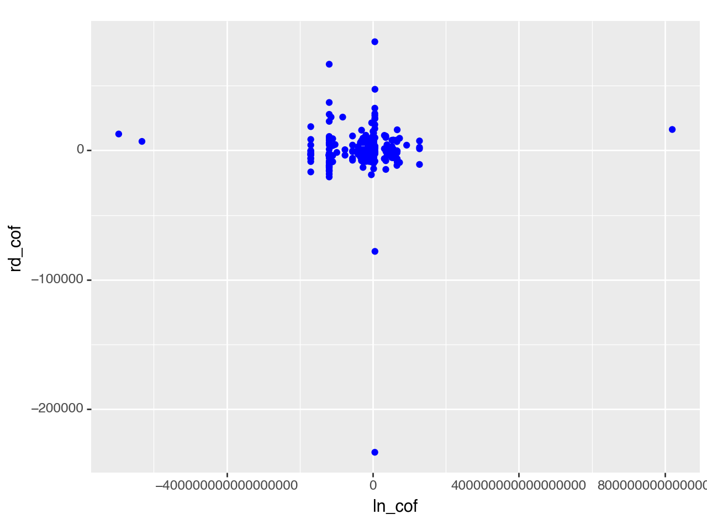
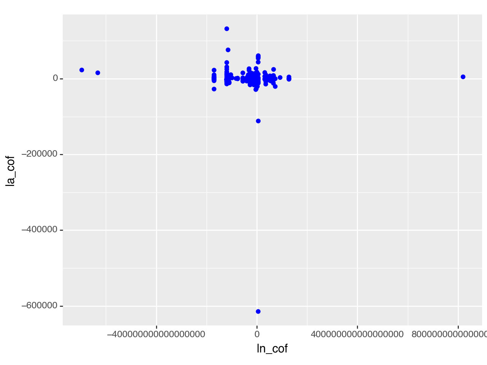
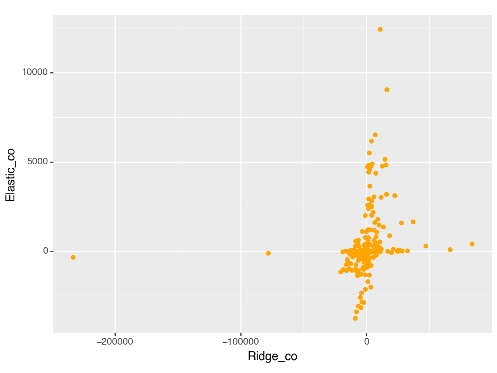
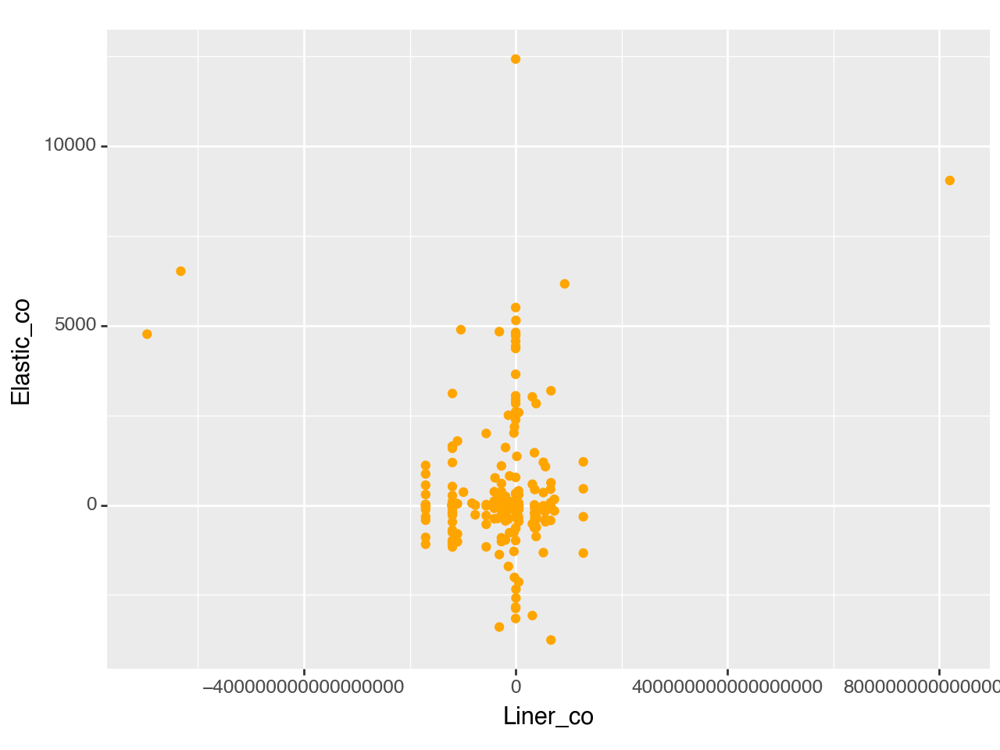

import pandas as pd
import numpy as np
from sklearn.pipeline import Pipeline
from sklearn.compose import make_column_selector, ColumnTransformer
from sklearn.preprocessing import StandardScaler, OneHotEncoder, PolynomialFeatures
from sklearn.linear_model import LinearRegression, Ridge, Lasso, ElasticNet
from sklearn.model_selection import train_test_split, cross_val_score
from sklearn.metrics import r2_score
from sklearn.model_selection import GridSearchCV# Read the data
ames = pd.read_csv("/Users/richlegendary/Desktop/GSB-S544/AmesHousing.csv")
# Get rid of columns with mostly NaN values
good_cols = ames.isna().sum() < 100
ames = ames.loc[:,good_cols]
# Drop other NAs
ames = ames.dropna()X = ames.drop(["SalePrice", "Order", "PID"], axis = 1)
y = ames["SalePrice"]
ct = ColumnTransformer(
[
("dummify",
OneHotEncoder(sparse_output = False, handle_unknown='ignore'),
make_column_selector(dtype_include=object)),
("standardize",
StandardScaler(),
make_column_selector(dtype_include=np.number))
],
remainder = "passthrough"
)
lr_pipeline_1 = Pipeline(
[("preprocessing", ct),
("linear_regression", LinearRegression())]
)cross_val_score(lr_pipeline_1, X, y, cv = 5, scoring = 'r2')array([-1.00227561e+21, -2.13473460e+19, -4.65481157e+21, -4.24892786e+21,
-4.16001805e+22])ridge
ridge_pipeline_1 = Pipeline(
[("preprocessing", ct),
("ridge_regression", Ridge(1))]
)cross_val_score(ridge_pipeline_1, X, y, cv = 5, scoring = 'r2')array([0.89815807, 0.91744024, 0.79493606, 0.78522563, 0.91389818])lr_fitted = lr_pipeline_1.fit(X, y)
ln_cof = lr_fitted.named_steps ['linear_regression'].coef_ridge_fitted = ridge_pipeline_1.fit(X, y)
rd_cof = ridge_fitted.named_steps ['ridge_regression'].coef_
coef = pd.DataFrame (data = {"Liner_co": ln_cof, "scores": rd_cof})from plotnine import *
coef_plot = ggplot(aes(x='ln_cof', y='rd_cof')) + \
geom_point(color='blue')
print(coef_plot)
ct = ColumnTransformer(
[
("dummify",
OneHotEncoder(sparse_output = False, handle_unknown='ignore'),
make_column_selector(dtype_include=object)),
("standardize",
StandardScaler(),
make_column_selector(dtype_include=np.number))
],
remainder = "passthrough"
)
ridge_pipeline_1 = Pipeline(
[("preprocessing", ct),
("ridge_regression", Ridge())]
)
degrees = {'ridge_regression__alpha': [0.001, 0.01, 0.1, 1, 10]}
gscv = GridSearchCV(ridge_pipeline_1, degrees, cv = 5, scoring='r2')gscv_fitted = gscv.fit(X, y)
gscv_fitted.cv_results_{'mean_fit_time': array([0.02440562, 0.02715497, 0.02552881, 0.020435 , 0.02135067]),
'std_fit_time': array([0.00362146, 0.01325447, 0.00550222, 0.00061452, 0.00308013]),
'mean_score_time': array([0.00440793, 0.00706391, 0.00643234, 0.00594015, 0.00812678]),
'std_score_time': array([0.00035741, 0.00324768, 0.00378801, 0.00170229, 0.00379629]),
'param_ridge_regression__alpha': masked_array(data=[0.001, 0.01, 0.1, 1, 10],
mask=[False, False, False, False, False],
fill_value='?',
dtype=object),
'params': [{'ridge_regression__alpha': 0.001},
{'ridge_regression__alpha': 0.01},
{'ridge_regression__alpha': 0.1},
{'ridge_regression__alpha': 1},
{'ridge_regression__alpha': 10}],
'split0_test_score': array([0.8972854 , 0.89734306, 0.89774358, 0.89815807, 0.8977621 ]),
'split1_test_score': array([0.91040618, 0.91061417, 0.91230557, 0.91744024, 0.92081211]),
'split2_test_score': array([0.78901601, 0.7891259 , 0.79010977, 0.79493606, 0.80057243]),
'split3_test_score': array([0.7721318 , 0.77253192, 0.77576412, 0.78522563, 0.78711955]),
'split4_test_score': array([0.90076168, 0.90131686, 0.90558729, 0.91389818, 0.91509487]),
'mean_test_score': array([0.85392021, 0.85418638, 0.85630206, 0.86193163, 0.86427221]),
'std_test_score': array([0.06027807, 0.06027967, 0.06025049, 0.05910381, 0.0581575 ]),
'rank_test_score': array([5, 4, 3, 2, 1], dtype=int32)}gscv_fitted.cv_results_['mean_test_score']
pd.DataFrame(data = {'ridge_regression__alpha': [0.001, 0.01, 0.1, 1, 10], "scores": gscv_fitted.cv_results_['mean_test_score']})| ridge_regression__alpha | scores | |
|---|---|---|
| 0 | 0.001 | 0.853920 |
| 1 | 0.010 | 0.854186 |
| 2 | 0.100 | 0.856302 |
| 3 | 1.000 | 0.861932 |
| 4 | 10.000 | 0.864272 |
lasso_pipeline_1 = Pipeline(
[("preprocessing", ct),
("lasso_regression", Lasso())]
)
degrees = {'lasso_regression__alpha': [0.001, 0.01, 0.1, 1, 10]}
gscv = GridSearchCV(lasso_pipeline_1, degrees, cv = 5, scoring='r2')gscv_fitted = gscv.fit(X, y)
gscv_fitted.cv_results_
gscv_fitted.cv_results_['mean_test_score']
pd.DataFrame(data = {'Lasso_regression__alpha': [0.001, 0.01, 0.1, 1, 10], "scores": gscv_fitted.cv_results_['mean_test_score']})/Users/richlegendary/anaconda3/lib/python3.11/site-packages/sklearn/linear_model/_coordinate_descent.py:628: ConvergenceWarning: Objective did not converge. You might want to increase the number of iterations, check the scale of the features or consider increasing regularisation. Duality gap: 2.109e+11, tolerance: 1.348e+09
/Users/richlegendary/anaconda3/lib/python3.11/site-packages/sklearn/linear_model/_coordinate_descent.py:628: ConvergenceWarning: Objective did not converge. You might want to increase the number of iterations, check the scale of the features or consider increasing regularisation. Duality gap: 2.466e+11, tolerance: 1.474e+09
/Users/richlegendary/anaconda3/lib/python3.11/site-packages/sklearn/linear_model/_coordinate_descent.py:628: ConvergenceWarning: Objective did not converge. You might want to increase the number of iterations, check the scale of the features or consider increasing regularisation. Duality gap: 1.894e+11, tolerance: 1.463e+09
/Users/richlegendary/anaconda3/lib/python3.11/site-packages/sklearn/linear_model/_coordinate_descent.py:628: ConvergenceWarning: Objective did not converge. You might want to increase the number of iterations, check the scale of the features or consider increasing regularisation. Duality gap: 1.756e+11, tolerance: 1.407e+09
/Users/richlegendary/anaconda3/lib/python3.11/site-packages/sklearn/linear_model/_coordinate_descent.py:628: ConvergenceWarning: Objective did not converge. You might want to increase the number of iterations, check the scale of the features or consider increasing regularisation. Duality gap: 2.569e+11, tolerance: 1.477e+09
/Users/richlegendary/anaconda3/lib/python3.11/site-packages/sklearn/linear_model/_coordinate_descent.py:628: ConvergenceWarning: Objective did not converge. You might want to increase the number of iterations, check the scale of the features or consider increasing regularisation. Duality gap: 2.110e+11, tolerance: 1.348e+09
/Users/richlegendary/anaconda3/lib/python3.11/site-packages/sklearn/linear_model/_coordinate_descent.py:628: ConvergenceWarning: Objective did not converge. You might want to increase the number of iterations, check the scale of the features or consider increasing regularisation. Duality gap: 2.466e+11, tolerance: 1.474e+09
/Users/richlegendary/anaconda3/lib/python3.11/site-packages/sklearn/linear_model/_coordinate_descent.py:628: ConvergenceWarning: Objective did not converge. You might want to increase the number of iterations, check the scale of the features or consider increasing regularisation. Duality gap: 1.988e+11, tolerance: 1.463e+09
/Users/richlegendary/anaconda3/lib/python3.11/site-packages/sklearn/linear_model/_coordinate_descent.py:628: ConvergenceWarning: Objective did not converge. You might want to increase the number of iterations, check the scale of the features or consider increasing regularisation. Duality gap: 1.757e+11, tolerance: 1.407e+09
/Users/richlegendary/anaconda3/lib/python3.11/site-packages/sklearn/linear_model/_coordinate_descent.py:628: ConvergenceWarning: Objective did not converge. You might want to increase the number of iterations, check the scale of the features or consider increasing regularisation. Duality gap: 2.456e+11, tolerance: 1.477e+09
/Users/richlegendary/anaconda3/lib/python3.11/site-packages/sklearn/linear_model/_coordinate_descent.py:628: ConvergenceWarning: Objective did not converge. You might want to increase the number of iterations, check the scale of the features or consider increasing regularisation. Duality gap: 2.236e+11, tolerance: 1.348e+09
/Users/richlegendary/anaconda3/lib/python3.11/site-packages/sklearn/linear_model/_coordinate_descent.py:628: ConvergenceWarning: Objective did not converge. You might want to increase the number of iterations, check the scale of the features or consider increasing regularisation. Duality gap: 1.570e+11, tolerance: 1.474e+09
/Users/richlegendary/anaconda3/lib/python3.11/site-packages/sklearn/linear_model/_coordinate_descent.py:628: ConvergenceWarning: Objective did not converge. You might want to increase the number of iterations, check the scale of the features or consider increasing regularisation. Duality gap: 1.588e+11, tolerance: 1.463e+09
/Users/richlegendary/anaconda3/lib/python3.11/site-packages/sklearn/linear_model/_coordinate_descent.py:628: ConvergenceWarning: Objective did not converge. You might want to increase the number of iterations, check the scale of the features or consider increasing regularisation. Duality gap: 1.698e+11, tolerance: 1.407e+09
/Users/richlegendary/anaconda3/lib/python3.11/site-packages/sklearn/linear_model/_coordinate_descent.py:628: ConvergenceWarning: Objective did not converge. You might want to increase the number of iterations, check the scale of the features or consider increasing regularisation. Duality gap: 2.557e+11, tolerance: 1.477e+09
/Users/richlegendary/anaconda3/lib/python3.11/site-packages/sklearn/linear_model/_coordinate_descent.py:628: ConvergenceWarning: Objective did not converge. You might want to increase the number of iterations, check the scale of the features or consider increasing regularisation. Duality gap: 2.323e+10, tolerance: 1.477e+09| Lasso_regression__alpha | scores | |
|---|---|---|
| 0 | 0.001 | 0.855499 |
| 1 | 0.010 | 0.855606 |
| 2 | 0.100 | 0.856618 |
| 3 | 1.000 | 0.857152 |
| 4 | 10.000 | 0.860632 |
lasso_fitted = lasso_pipeline_1.fit(X, y)
la_cof = lasso_fitted.named_steps ['lasso_regression'].coef_
coef = pd.DataFrame (data = {"Liner_co": ln_cof, "scores": la_cof})from plotnine import *
coef_plot = ggplot(aes(x='ln_cof', y='la_cof')) + \
geom_point(color='blue')
print(coef_plot)
elastic net
elastic_net_pipeline_1 = Pipeline(
[("preprocessing", ct),
("elastic_net", ElasticNet(),l1_ratio())]
)
degrees = {'lasso_regression__alpha': [0.001, 0.01, 0.1, 1, 10]}
gscv = GridSearchCV(lasso_pipeline_1, degrees, cv = 5, scoring='r2')elastic_net_pipeline_1 = Pipeline([
("preprocessing", ct),
("elastic_net", ElasticNet())
])
degrees = {
'elastic_net__alpha': [0.001, 0.01, 0.1, 1, 10],
'elastic_net__l1_ratio': [0.001, 0.01, 0.1, 1, 10]
}
gscv = GridSearchCV(elastic_net_pipeline_1, degrees, cv=5, scoring='r2')
elastic_fitted = elastic_net_pipeline_1.fit(X, y)
el_cof = elastic_fitted.named_steps ['elastic_net'].coef_
coef = pd.DataFrame (data = {"Liner_co": ln_cof, "Elastic_co": el_cof, "Lasso_co": la_cof,"Ridge_co": rd_cof})p = (ggplot(coef, aes(x='Ridge_co')) +
geom_point(aes(y='Elastic_co'), color='orange') )
print(p)

p = (ggplot(coef, aes(x='Liner_co')) +
geom_point(aes(y='Elastic_co'), color='orange') )
print(p)